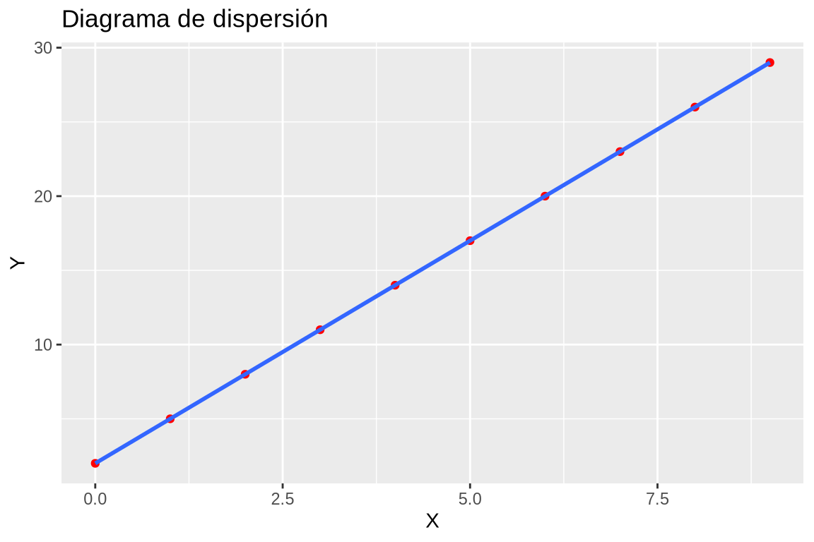
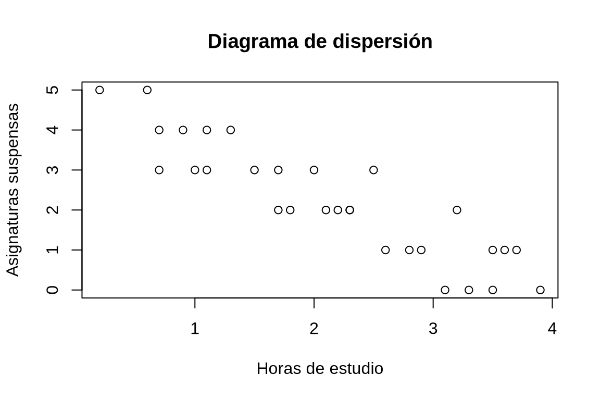
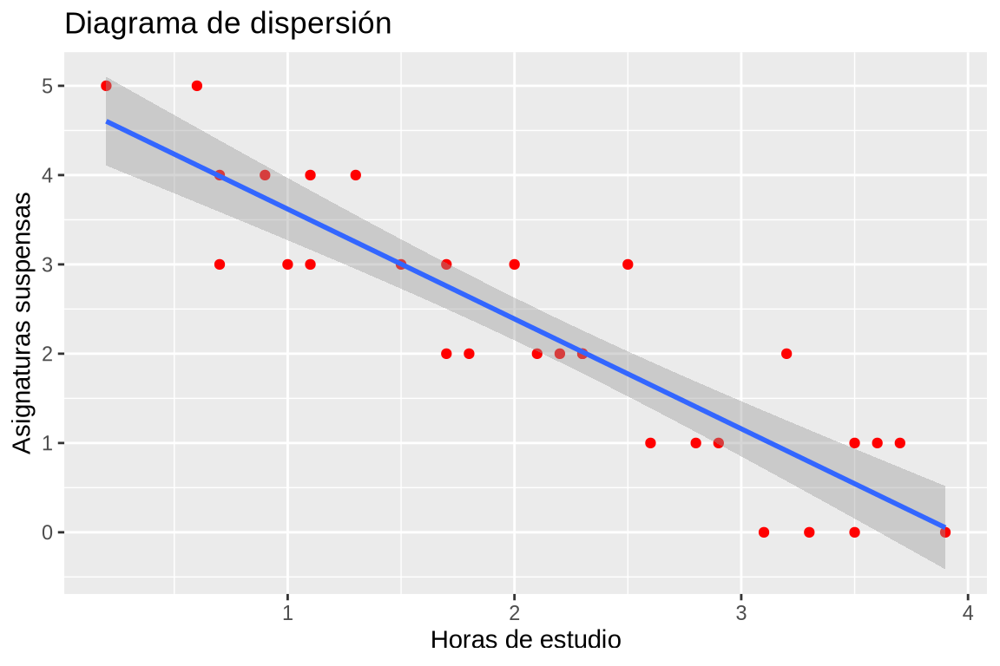
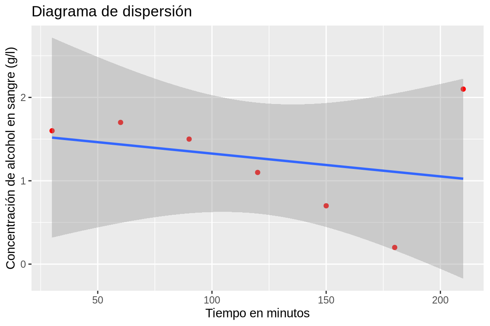
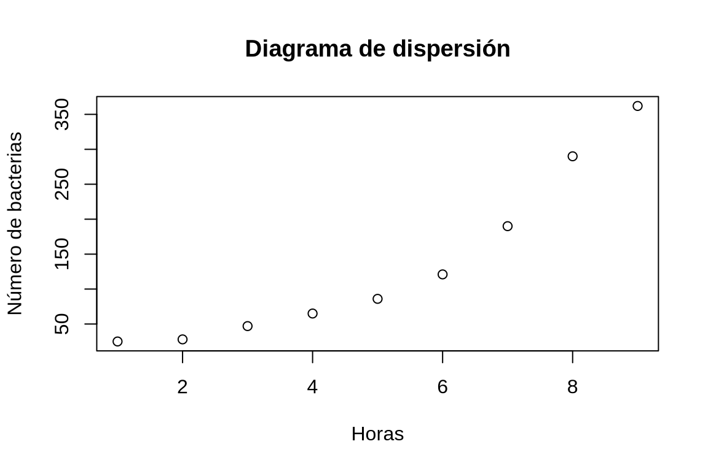
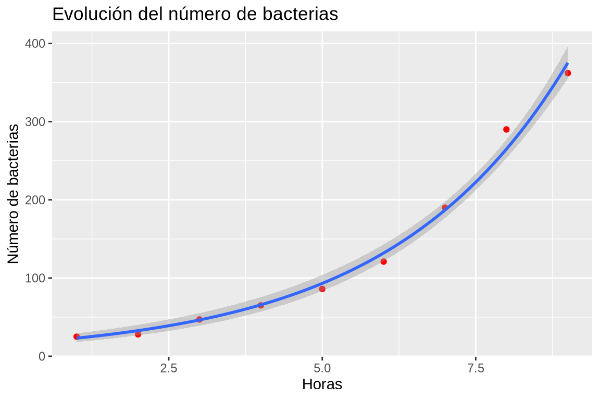
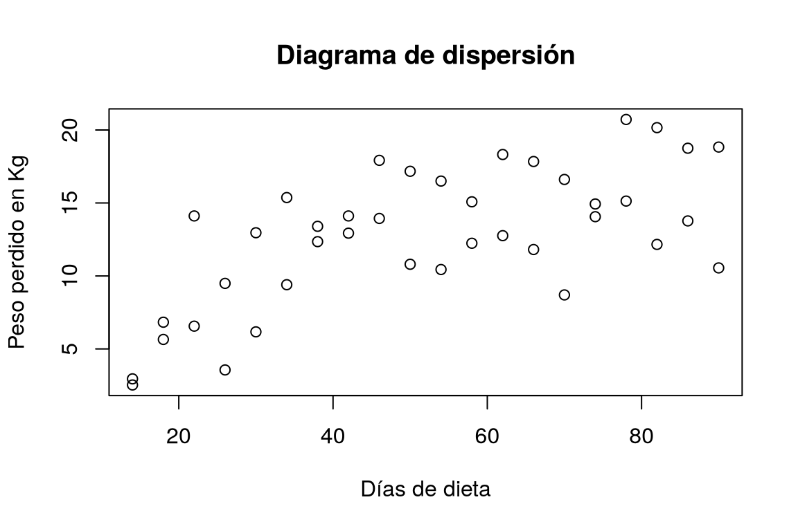
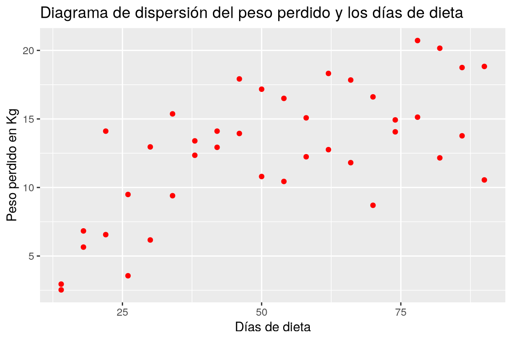
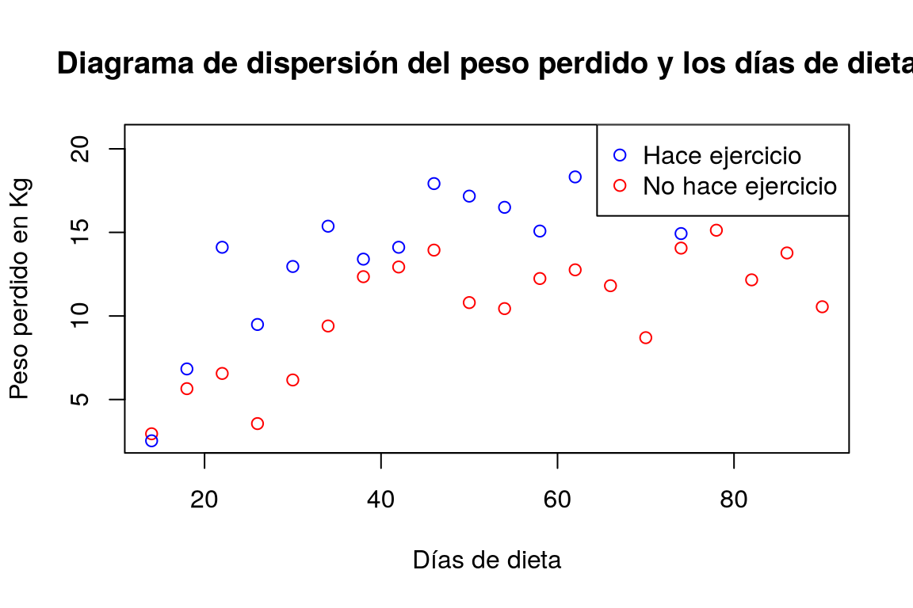
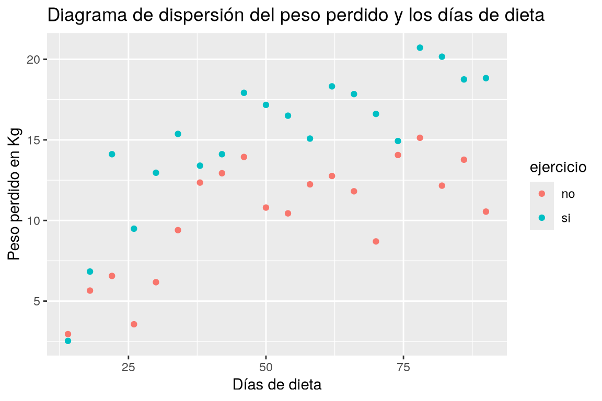

6 Regresión
Esta práctica contiene ejercicios que muestran como construir modelos de regresión simple que describen la relación entre dos variables cuantitativas. En particular se muestra cómo construir los siguientes modelos:
| Modelo | Ecuación general |
|---|---|
| Lineal | \(y=a+bx\) |
| Parabólico | \(y=a+bx+cx^2\) |
| Polinómico de grado \(n\) | \(y=a_0+a_1x+\cdots+a_nx^n\) |
| Potencial | \(y=ax^b\) |
| Exponencial | \(y=e^{a+bx}\) |
| Logarítmico | \(y=a+b\log x\) |
| Inverso | \(y=a+b/x\) |
| Curva S o Sigmoidal | \(y= e^{a+b/x}\) |
6.1 Ejercicios Resueltos
Para la realización de esta práctica se requieren los siguientes paquetes:
library(tidyverse)
# Incluye los siguientes paquetes:
# - readr: para la lectura de ficheros csv.
# - dplyr: para el preprocesamiento y manipulación de datos.
# - tidyr: para la organización de los datos.
library(tidymodels) # para el ajuste de modelos de regresión.
library(broom) # para convertir las listas con los resúmenes de los modelos de regresión a formato organizado.
library(knitr) # para el formateo de tablas.
NotaVersiones de R y de los paquetes utilizados
TipContexto para Copilot
Si se va a usar Copilot para resolver los ejercicios se recomienda añadir el siguiente contexto al comienzo del script o al fichero r.instructions.md.
---
name: "Reglas de programación para R"
applyTo: "**/*.[rR], **/*.qmd"
---
## Reglas de programación para R
- Usar tidyverse para todas las tareas de preprocesamiento (dplyr/tidyr/readr/stringr/lubridate/forcats/purrr).
- Preferir tuberías con |> (o %>% si se usa en el archivo).
- Evitar la manipulación de datos en base R (merge, aggregate, subset) a menos que se solicite explícitamente.
- Mantener el código legible y usar verbos explícitos: select, mutate, summarise, group_by, pivot_longer/wider.
- Cuando no haya ambigüedad no antepongas el nombre del paquete a la función.
- En los nombres de variables y valores respetar el uso de mayúsculas y minúsculas (camelCase o snake_case) y ser consistente en todo el código.
- No generar nuevos data frames, ni modificar los asistentes, salvo cuando se indique explícitamente.
- Utiliza el prefijo `df_` para los nombres de los data frames.
- Organizar las salidas con la función tidy del paquete broom y mostrar solo las columnas relevantes (estimate, std.error, statistic, p.value).
- Mostrar los data frames o las tablas con la función kable del paquete knitr.
- Para gráficos usar ggplot2 y mantener un estilo limpio y profesional.Ejercicio 6.1 Se han medido dos variables \(X\) e \(Y\) en 10 individuos obteniendo los siguientes resultados:
| X | 0 | 1 | 2 | 3 | 4 | 5 | 6 | 7 | 8 | 9 |
| Y | 2 | 5 | 8 | 11 | 14 | 17 | 20 | 23 | 26 | 29 |
-
Crear un conjunto de datos con las variables
xey.TipSolucióndf <- data.frame( x = c(0, 1, 2, 3, 4, 5, 6, 7, 8, 9), y = c(2, 5, 8, 11, 14, 17, 20, 23, 26, 29) )Crear un data frame de nombre df con dos columnas x e y, donde x contenga los valores del 0 al 9, e y contenga los valores 2, 5, 8, 11, 14, 17, 20, 23, 26 y 29. -
Dibujar el diagrama de dispersión correspondiente. ¿Qué tipo de modelo de regresión se ajusta mejor a la nube de puntos?
TipSoluciónPara dibujar un diagrama de dispersión podemos usar la función
Parámetros:plotdel paquetegraphics.-
x: vector con los valores de la variable independiente. -
y: vector con los valores de la variable dependiente. -
xlab: etiqueta del eje x. -
ylab: etiqueta del eje y. -
main: título del gráfico.
plot(df$x, df$y, xlab = "X", ylab = "Y", main = "Diagrama de dispersión")Podemos dibujar un diagrama de dispersión con la función
Parámetros:geom_pointdel paqueteggplot2detidyverse.-
col: color del punto en el gráfico. -
shape:: forma del punto en el gráfico. -
size:: tamaño del punto en el gráfico.
Dibujar un diagrama de dispersión con los valores de la columna x del data frame df el eje x y los valores de la columna y en el eje y.El tipo de modelo que mejor se ajusta es lineal, ya que todos los puntos están alineados.
-
-
Calcular la recta de regresión de \(Y\) sobre \(X\).
TipSoluciónPara ajustar un modelo de regresión podemos usar la función
Parámetros:lmdel paquetestats.-
formula: fórmula del modelo de regresión con la sintaxisy ~ f(x), dondeyes la variable dependiente en el modelo,xes la variable independiente, yf(x)es una expresión matemática que describe el modelo.
Para ajustar un modelo de regresión también podemos usar las siguientes funciones del paquete
tidymodels:-
linear_reg: para definir un modelo de regresión lineal. -
set_engine: para especificar el motor de ajuste del modelo.
Parámetros:-
motor: motor de ajuste del modelo. En este caso se utiliza el motorlmque es el motor de ajuste de modelos lineales del paquetestats.
-
-
fit: para ajustar el modelo a los datos. Obtiene la estimación de los parámetros del modelo (pendiente y término independiente) a partir de los datos de la muestra.
Parámetros:-
formula: fórmula del modelo de regresión con la sintaxisy ~ f(x), dondeyes la variable dependiente en el modelo,xes la variable independiente, yf(x)es una expresión matemática que describe el modelo.
-
library(tidymodels) modelo_lineal_y_x <- linear_reg() |> set_engine("lm") |> fit(y ~ x, df) tidy(modelo_lineal_y_x) |> kable()term estimate std.error statistic p.value (Intercept) 2 0 1.906312e+15 0 x 3 0 1.526538e+16 0 La recta de regresión de \(Y\) sobre \(X\) es \(y = 2 + 3 x\).
-
-
Obtener el coeficiente de regresión de la recta anterior e interpretarlo.
TipSoluciónEl coeficiente de regresión es la pendiente de la recta de regresión.
recta_y_x$coefficients[["x"]][1] 3modelo_lineal_y_x$fit$coefficients[2]x 3El coeficiente de regresión de \(Y\) sobre \(X\) vale 3, lo que indica que \(Y\) aumenta 3 unidades por cada unidad que aumenta \(X\).
-
Dibujar la recta de regresión de \(Y\) sobre \(X\) sobre el diagrama de dispersión. ¿Cómo son los residuos del modelo de regresión?
TipSoluciónPara dibujar la recta de regresión sobre el diagrama de dispersión, podemos usar la función
ablinedel paquetegraphics.Parámetros: - `a`: término independiente de la recta de regresión. - `b`: pendiente de la recta de regresión.Para dibujar la recta de regresión sobre el diagrama de dispersión, podemos usar la función
geom_smoothdel paqueteggplot2detidyverse.Parámetros: - `method`: método de ajuste de la recta de regresión, por defecto es "lm".library(ggplot2) ggplot(df, aes(x = x, y = y)) + geom_point(col = "red") + geom_smooth(method = "lm") + labs(title = "Diagrama de dispersión", x = "X", y = "Y")
Como la recta pasa por todos los puntos del diagrama de dispersión, los residuos son nulos.
-
Calcular el coeficiente de determinación del modelo lineal e interpretarlo.
TipSoluciónsummary(recta_y_x)$r.squared[1] 1Calcular el coeficiente de determinación lineal R² del modelo de regresión lineal ajustado.Como el coeficiente de determinación lineal vale 1, el ajuste de la recta de regresión es perfecto.
-
Calcular la recta de regresión de \(X\) sobre \(Y\). ¿Coincide con la recta de regresión de \(Y\) sobre \(X\)?
TipSoluciónCall: lm(formula = x ~ y, data = df) Residuals: Min 1Q Median 3Q Max -8.668e-16 -4.345e-16 -8.827e-17 3.905e-16 1.196e-15 Coefficients: Estimate Std. Error t value Pr(>|t|) (Intercept) -6.667e-01 4.215e-16 -1.582e+15 <2e-16 *** y 3.333e-01 2.377e-17 1.402e+16 <2e-16 *** --- Signif. codes: 0 '***' 0.001 '**' 0.01 '*' 0.05 '.' 0.1 ' ' 1 Residual standard error: 6.477e-16 on 8 degrees of freedom Multiple R-squared: 1, Adjusted R-squared: 1 F-statistic: 1.967e+32 on 1 and 8 DF, p-value: < 2.2e-16La recta de regresión de \(X\) sobre \(Y\) es \(x = -0.6666667 + 0.3333333 x\), que es la misma que la recta de \(Y\) sobre \(X\), ya que el ajuste es perfecto, y tanto los residuos en \(Y\) como los residuos en \(X\) valen cero para esta recta.
Ejercicio 6.2 El fichero horas-estudio.csv contiene información sobre las horas de estudio diarias de una muestra de alumnos de Farmacia, y el número de asignaturas suspendidas al final del curso.
-
Crear un data frame con los datos de las horas de estudio y los suspensos a partir del fichero
horas-estudio.csv.TipSoluciónCrear un data frame con los datos del fichero csv https://aprendeconalf.es/estadistica-practicas-r/datos/horas-estudio.csv que contiene las horas de estudio diarias de una muestra de alumnos de Farmacia, y el número de asignaturas suspendidas al final del curso. -
Dibujar el diagrama de dispersión correspondiente. ¿Qué tipo de modelo de regresión se ajusta mejor a la nube de puntos?
TipSoluciónplot(df$Horas, df$Suspensos, xlab = "Horas de estudio", ylab = "Asignaturas suspensas", main = "Diagrama de dispersión")
Dibujar un diagrama de dispersión con los valores de la columna Horas del data frame df el eje x y los valores de la columna Suspensos en el eje y.El tipo de modelo que mejor se ajusta es lineal, ya que hay una tendencia lineal en la nube de puntos y además es inversa.
-
Calcular la recta de regresión de los suspensos sobre las horas de estudio.
TipSoluciónCalcular la recta de regresión de los suspensos sobre las horas de estudio a partir del data frame df.La recta de regresión de los suspensos sobre las horas es \(\textsf{suspensos}= 4.8491273 + -1.2299972 \textsf{horas}\).
-
Obtener el coeficiente de regresión de la recta anterior e interpretarlo.
TipSoluciónrecta_suspensos_horas$coefficients[["Horas"]][1] -1.229997modelo_lineal_suspensos_horas$fit$coefficients[2]Horas -1.229997Obtener el coeficiente de regresión (pendiente) de la recta de regresión de los suspensos sobre las horas de estudio a partir del modelo lineal ajustado.El coeficiente de regresión de los suspensos sobre las horas de estudio vale -1.2299972, lo que indica que por cada hora de estudio se obtendrán 1.2299972 suspensos menos al final del curso.
-
Dibujar la recta de regresión sobre el diagrama de dispersión. ¿El ajuste es mejor o peor que el del ejercicio anterior?
TipSoluciónlibrary(ggplot2) ggplot(df, aes(x = Horas, y = Suspensos)) + geom_point(col = "red") + geom_smooth(method = "lm") + labs(title = "Diagrama de dispersión", x = "Horas de estudio", y = "Asignaturas suspensas")
Dibujar la recta de regresión de los suspensos sobre las horas de estudio sobre el diagrama de dispersión con los datos del data frame df.En este caso el ajuste no es perfecto, ya que es imposible que la recta pase por todos los puntos como ocurría en el ejercicio anterior. Por tanto, el ajuste es peor.
-
Calcular el coeficiente de determinación del modelo lineal e interpretarlo.
TipSoluciónsummary(recta_suspensos_horas)$r.squared[1] 0.8154995Calcular el coeficiente de determinación lineal R² del modelo de regresión lineal ajustado del número de suspensos sobre el número de horas de estudio.Como el coeficiente de determinación lineal vale 0.8154995 que está bastante próximo a 1, el ajuste es bueno, y el modelo puede utilizarse con fines predictivos.
-
Utilizar la recta de regresión para predecir el número de suspensos correspondiente a 3 horas de estudio diarias. ¿Es fiable esta predicción?
TipSoluciónpredict.lm(recta_suspensos_horas, newdata = list(Horas = 3)) |> kable()x 1.159136 Utilizar el modelo de regresión lineal ajustado del número de suspensos sobre el número de horas de estudio para predecir el número de suspensos correspondiente a 3 horas de estudio diarias.La predicción será fiable ya que el coeficiente de determinación está próximo a 1 y el tamaño de la muestra no es muy pequeño.
-
Según el modelo lineal, ¿cuántas horas diarias tendrá que estudiar como mínimo un alumno si quiere aprobarlo todo?
TipSoluciónComo ahora queremos predecir el número de horas de estudio, necesitamos calcular la recta de regresión de la horas sobre los suspensos.
recta_horas_suspensos <- lm(Horas ~ Suspensos, df) predict.lm(recta_horas_suspensos, newdata = list(Suspensos = 0)) |> kable()x 3.607387 Calcular la recta de regresión de las horas de estudio sobre el número de suspensos a partir del data frame df, y utilizarla para predecir el número de horas de estudio diarias correspondiente a 0 suspensos.
Ejercicio 6.3 Después de tomar un litro de vino se ha medido la concentración de alcohol en la sangre en distintos instantes, obteniendo los siguientes datos
| Tiempo después (minutos) | 30 | 60 | 90 | 120 | 150 | 180 | 210 |
| Alcohol (gramos/litro) | 1.6 | 1.7 | 1.5 | 1.1 | 0.7 | 0.2 | 2.1 |
-
Crear un data frame con los datos del tiempo y la concentración de alcohol.
TipSolucióndf <- data.frame( Tiempo = c(30, 60, 90, 120, 150, 180, 210), Alcohol = c(1.6, 1.7, 1.5, 1.1, 0.7, 0.2, 2.1) )Crear un data frame de nombre df con dos columnas Tiempo y Alcohol, donde Tiempo contenga los valores 30, 60, 90, 120, 150, 180 y 210, e Alcohol contenga los valores 1.6, 1.7, 1.5, 1.1, 0.7, 0.2 y 2.1. -
Calcular el coeficiente de correlación lineal. ¿Existe relación lineal entre la concentración de alcohol y el tiempo que pasa?
TipSoluciónPara calcular el coeficiente de correlación lineal de Pearson se puede utilizar la función
Parámetros:cordel paquetestats.-
x,y: vectores con los valores de las variables.
cor(df$Tiempo, df$Alcohol)[1] -0.2730367Calcular el coeficiente de correlación lineal de Pearson de las columnas Tiempo y Alcohol del dataframe `df`.El valor del coeficiente de correlación lineal es muy bajo, por lo que aparentemente no hay relación lineal entre la concentración de alcohol en sangre y el tiempo que pasa.
-
-
Dibujar el diagrama de dispersión correspondiente y la recta de regresión de la concentración de alcohol sobre el tiempo. ¿Por qué el ajuste es tan malo?
TipSoluciónlibrary(ggplot2) ggplot(df, aes(x = Tiempo, y = Alcohol)) + geom_point(col = "red") + geom_smooth(method = "lm") + labs(title = "Diagrama de dispersión", x = "Tiempo en minutos", y = "Concentración de alcohol en sangre (g/l)")
Dibujar un diagrama de dispersión con los valores de la columna Tiempo del data frame df el eje x y los valores de la columna Alcohol en el eje y, y dibujar la recta de regresión de la concentración de alcohol sobre el tiempo.El ajuste es malo porque hay un dato atípico que no sigue la misma tendencia que el resto.
-
Eliminar el dato atípico y calcular la recta de la concentración de alcohol sobre el tiempo. ¿Ha mejorado el modelo?
TipSoluciónSe observa en el diagrama de dispersión que el dato atípico corresponde al la última fila del data frame.
term estimate std.error statistic p.value (Intercept) 2.1733333 0.2019272 10.762954 0.0004225 Tiempo -0.0099048 0.0017283 -5.730803 0.0045909 library(tidymodels) # Eliminamos el dato atípico que está en la última fila. df <- df |> slice(-7) # Ajustamos al recta de regresión de la concentración de alcohol sobre el tiempo. modelo_lineal_alcohol_tiempo <- linear_reg() |> set_engine("lm") |> fit(Alcohol ~ Tiempo, df) tidy(modelo_lineal_alcohol_tiempo) |> kable()term estimate std.error statistic p.value (Intercept) 2.1733333 0.2019272 10.762954 0.0004225 Tiempo -0.0099048 0.0017283 -5.730803 0.0045909 Eliminar el dato atípico que está en la última fila del data frame df, y ajustar la recta de regresión de la columna Alcohol sobre la columna Tiempo del del data frame df.La recta de regresión de la concentración de alcohol en sangre sobre el tiempo es \(\textsf{alcohol}= 2.1733333 + -0.0099048 \textsf{tiempo}\).
El modelo ha mejorado notablemente ya que ahora el coeficiente de determinación lineal \(R^2=0.8914286\), que está muy próximo a 1.
-
Según el modelo de regresión lineal, ¿a qué velocidad metaboliza esta persona el alcohol?
TipSoluciónLa velocidad de metabolización del alcohol es el valor absoluto del coeficiente de regresión de la concentración de alcohol sobre el tiempo, ya que el coeficiente de regresión indica el cambio en la concentración de alcohol por cada unidad de tiempo que pasa.
recta_alcohol_tiempo$coefficients[["Tiempo"]][1] -0.009904762modelo_lineal_suspensos_horas$fit$coefficients[2]Horas -1.229997Obtener el coeficiente de regresión (pendiente) de la recta de regresión de la concentración de alcohol sobre el tiempo a partir del modelo lineal ajustado.Así pues, la velocidad de metabolización del alcohol es 0.0099048 g/l\(\cdot\)min.
-
Si la concentración máxima de alcohol en la sangre que permite la ley para poder conducir es \(0.3\) g/l, ¿cuánto tiempo habrá que esperar después de tomarse un litro de vino para poder conducir sin infringir la ley? ¿Es fiable esta predicción?
TipSoluciónComo ahora queremos predecir el tiempo, necesitamos calcular la recta de regresión del tiempo sobre la concentración de alcohol.
recta_tiempo_alcohol <- lm(Tiempo ~ Alcohol, df) predict.lm(recta_tiempo_alcohol, newdata = list(Alcohol = 0.3)) |> kable()x 180 Calcular la recta de regresión de la columna Tiempo sobre la columna Alcohol del data frame df y usarla para predecir el tiempo correspondiente a una concentración de alcohol en sangre de 0.3 g/l.Aunque el coeficiente de determinación lineal está próximo a 1, el tamaño muestra es demasiado pequeño para que la predicción sea fiable.
Ejercicio 6.4 En un experimento se ha medido el número de bacterias por unidad de volumen en un cultivo, cada hora transcurrida, obteniendo los siguientes resultados:
| Horas | 1 | 2 | 3 | 4 | 5 | 6 | 7 | 8 | 9 |
| Nº Bacterias | 25 | 28 | 47 | 65 | 86 | 121 | 190 | 290 | 362 |
-
Crear un data frame con los datos del número de horas y el número de bacterias.
TipSolucióndf <- data.frame( Horas = c(1, 2, 3, 4, 5, 6, 7, 8, 9), Bacterias = c(25, 28, 47, 65, 86, 121, 190, 290, 362) )Crear un data frame de nombre df con dos columnas Horas y Bacterias, donde Horas contenga los valores 1, 2, 3, 4, 5, 6, 7, 8 y 9, y Bacterias contenga los valores 25, 28, 47, 65, 86, 121, 190, 290 y 362. -
Dibujar el diagrama de dispersión que represente la evolución del número de bacterias con el tiempo. ¿Qué tipo de modelo de regresión se ajusta mejor a la nube de puntos?
TipSoluciónplot(df$Horas, df$Bacterias, xlab = "Horas", ylab = "Número de bacterias", main = "Diagrama de dispersión")
Dibujar un diagrama de dispersión con los valores de la columna Horas del data frame df el eje x y los valores de la columna Bacterias en el eje y.A la vista de la forma de la nube de puntos parece que la evolución del número de bacterias es exponencial.
-
Dibujar el diagrama de dispersión del logaritmo del número de bacterias y el número de horas.
TipSoluciónCrear una nueva columna logBacterias en el data frame df con el logaritmo del número de bacterias, y dibujar un diagrama de dispersión con los valores de la columna Horas del data frame df el eje x y los valores de la columna logBacterias en el eje y.La nube de puntos tienen una clara forma lineal, lo que confirma que la evolución del PIB es exponencial.
-
Calcular el modelo de regresión exponencial del número de bacterias sobre el número de horas.
TipSoluciónlibrary(tidymodels) modelo_lineal_logBacterias_horas <- linear_reg() |> set_engine("lm") |> fit(logBacterias ~ Horas, df) tidy(modelo_lineal_logBacterias_horas) |> kable()term estimate std.error statistic p.value (Intercept) 2.7549842 0.0617364 44.62497 0 Horas 0.3519877 0.0109708 32.08392 0 Calcular el modelo de regresión lineal del logaritmo del número de bacterias sobre el número de horas a partir del data frame df.El modelo de regresión exponencial que mejor explica la evolución del número de bacterias es \(\textsf{Bacterias}= e^{2.75 + 0.35 \textsf{Horas}}\).
-
¿Cuál es la tasa de crecimiento relativa de la población de bacterias?
TipSoluciónLa tasa de crecimiento relativa de un modelo exponencial \(y = ae^{bx}\) es
\[ \frac{dy/dx}{y} = \frac{ae^{bx}b}{ae^{bx}} = b, \]
que es la pendiente del modelo \(\log(y)=\log(a) + bx\), por lo que la tasa de crecimiento relativa es el coeficiente del modelo de regresión lineal del logaritmo del número de bacterias sobre las horas.
recta_logBacterias_horas$coefficients[["Horas"]][1] 0.3519877modelo_lineal_logBacterias_horas$fit$coefficients[2]Horas 0.3519877Obtener el coeficiente de regresión (pendiente) de la recta de regresión del logaritmo del número de bacterias sobre el número de horas a partir del modelo lineal ajustado. Interpretarlo como la tasa de crecimiento relativa de la población de bacterias.El coeficiente de regresión del logaritmo del número de bacterias sobre las horas vale 0.3519877, lo que indica que por cada hora que pasa el número de bacterias se multiplica por \(\exp(0.3519877)\).
-
Dibujar el modelo de regresión exponencial sobre el diagrama de dispersión.
TipSoluciónggplot(df, aes(x = Horas, y = Bacterias)) + geom_point(col = "red") + geom_smooth(method = "glm", method.args = list(family = gaussian(link = "log"))) + labs(title = "Evolución del número de bacterias", x = "Horas", y = "Número de bacterias")
Dibujar el modelo de regresión exponencial del número de bacterias sobre el número de horas sobre el diagrama de dispersión con los datos del data frame df. -
¿Es el modelo de regresión exponencial un buen modelo para explicar la evolución de la población de bacterias?
TipSoluciónsummary(recta_logBacterias_horas)$r.squared[1] 0.9932457Calcular el coeficiente de determinación lineal R² del modelo de regresión exponencial del número de bacterias sobre el número de horas a partir del modelo lineal ajustado del logaritmo del número de bacterias sobre el número de horas, e interpretarlo para valorar si el modelo de regresión exponencial es un buen modelo para explicar la evolución de la población de bacterias.Como el coeficiente de determinación lineal vale 0.9932457 que está bastante próximo a 1, el ajuste es bueno, y el modelo exponencial explica muy bien la evolución del número de bacterias.
-
Según el modelo de regresión exponencial ¿cuántas bacterias habrá al cabo de 3 horas y media del inicio del cultivo? ¿Y al cabo de 10 horas? ¿Son fiables estas predicciones?
TipSoluciónComo hemos construido el modelo de regresión lineal del logaritmo del número de bacterias sobre las horas, para predecir el número de bacterias a partir del número de horas, necesitamos aplicar la función exponencial a la predicción del modelo lineal.
exp(predict.lm(recta_logBacterias_horas, newdata = list(Horas = c(3.5, 10)))) |> kable()x 53.88979 531.05241 Utilizar el modelo de regresión exponencial del número de bacterias sobre el número de horas para predecir el número de bacterias al cabo de 3.5 horas y 10 horas, aplicando la función exponencial a la predicción del modelo lineal del logaritmo del número de bacterias sobre el número de horas.Las predicciones no son muy fiables ya que, aunque el coeficiente de determinación está próximo a 1, el tamaño de la muestra es muy pequeño.
-
Dar una predicción lo más fiable posible del tiempo que tendría que transcurrir para que en el cultivo hubiese 100 bacterias.
TipSoluciónComo ahora queremos predecir el tiempo en el que se alcanzarán 100 bacterias en el cultivo, necesitamos construir el modelo de regresión de las horas sobre el número de bacterias. Como la relación entre el número de bacterias y las horas es exponencial, la relación entre las horas y el número de bacterias será la inversa, es decir, el modelo logarítmico.
term estimate std.error statistic p.value (Intercept) -7.740297 0.4051116 -19.10658 3e-07 log(Bacterias) 2.821820 0.0879512 32.08392 0e+00 predict.lm(log_horas_Bacterias, newdata = list(Bacterias = 100)) |> kable()x 5.254663 term estimate std.error statistic p.value (Intercept) -7.740297 0.4051116 -19.10658 3e-07 log(Bacterias) 2.821820 0.0879512 32.08392 0e+00 .pred Bacterias 5.254663 100 Calcular el modelo de regresión lineal de las horas sobre el logaritmo del número de bacterias a partir del data frame df, y utilizarlo para predecir el número de horas correspondiente a un número de bacterias igual a 100.
Ejercicio 6.5 El fichero dieta.csv contiene información sobre el los kilos perdidos con una dieta de adelgazamiento.
-
Crear un data frame con los datos de la dieta a partir del fichero
dieta.csv.TipSolucióndf <- read.csv("https://aprendeconalf.es/estadistica-practicas-r/datos/dieta.csv") dfdias peso.perdido ejercicio 14 2.95 no 18 5.65 no 22 6.56 no 26 3.56 no 30 6.17 no 34 9.40 no 38 12.35 no 42 12.93 no 46 13.94 no 50 10.80 no 54 10.44 no 58 12.24 no 62 12.76 no 66 11.81 no 70 8.70 no 74 14.06 no 78 15.13 no 82 12.16 no 86 13.77 no 90 10.55 no 14 2.53 si 18 6.83 si 22 14.11 si 26 9.49 si 30 12.96 si 34 15.37 si 38 13.40 si 42 14.11 si 46 17.92 si 50 17.17 si 54 16.50 si 58 15.08 si 62 18.32 si 66 17.84 si 70 16.61 si 74 14.93 si 78 20.72 si 82 20.16 si 86 18.75 si 90 18.83 si dias peso.perdido ejercicio 14 2.95 no 18 5.65 no 22 6.56 no 26 3.56 no 30 6.17 no 34 9.40 no 38 12.35 no 42 12.93 no 46 13.94 no 50 10.80 no 54 10.44 no 58 12.24 no 62 12.76 no 66 11.81 no 70 8.70 no 74 14.06 no 78 15.13 no 82 12.16 no 86 13.77 no 90 10.55 no 14 2.53 si 18 6.83 si 22 14.11 si 26 9.49 si 30 12.96 si 34 15.37 si 38 13.40 si 42 14.11 si 46 17.92 si 50 17.17 si 54 16.50 si 58 15.08 si 62 18.32 si 66 17.84 si 70 16.61 si 74 14.93 si 78 20.72 si 82 20.16 si 86 18.75 si 90 18.83 si Crear un data frame de nombre df con los datos del fichero con la url https://aprendeconalf.es/estadistica-practicas-r/datos/dieta.csv. -
Dibujar el diagrama de dispersión de los kilos perdidos en función del número de días con la dieta. ¿Qué tipo de modelo de regresión se ajusta mejor a la nube de puntos?
TipSoluciónplot(df$dias, df$peso.perdido, xlab = "Días de dieta", ylab = "Peso perdido en Kg", main = "Diagrama de dispersión")
ggplot(df, aes(x = dias, y = peso.perdido)) + geom_point(col = "red") + labs(title = "Diagrama de dispersión del peso perdido y los días de dieta", x = "Días de dieta", y = "Peso perdido en Kg")
Dibujar un diagrama de dispersión con los valores de la columna dias del data frame df el eje x y los valores de la columna peso.perdido en el eje y.La nube de puntos es bastante difusa aunque parece apreciarse una tendencia logarítmica o sigmoidal.
-
Calcular los coeficientes de determinación lineal, cuadrático, exponencial, logarítmico, potencial, inverso y sigmoidal. ¿Qué tipo de modelo explica mejor la relación entre los kilos perdidos y el número de días de dieta? ¿Qué porcentaje de la variabilidad de peso perdido explica el mejor modelo de regresión?
TipSoluciónlibrary(knitr) modelos <- data.frame( Tipo_Modelo = c("Lineal", "Cuadrático", "Exponencial", "Logarítmico", "Potencial", "Inverso", "Sigmoidal"), R2 = c( summary(lm(peso.perdido ~ dias, df))$r.squared, summary(lm(peso.perdido ~ dias + I(dias^2), df))$r.squared, summary(lm(log(peso.perdido) ~ dias, df))$r.squared, summary(lm(peso.perdido ~ log(dias), df))$r.squared, summary(lm(log(peso.perdido) ~ log(dias), df))$r.squared, summary(lm(peso.perdido ~ I(1/dias), df))$r.squared, summary(lm(log(peso.perdido) ~ I(1/dias), df))$r.squared ) ) modelos <- modelos[order(-modelos$R2), ] kable(modelos, col.names = c("Tipo de Modelo", "R²"), row.names = FALSE)Tipo de Modelo R² Sigmoidal 0.6662170 Potencial 0.5684490 Inverso 0.5583853 Cuadrático 0.5397848 Logarítmico 0.5254856 Lineal 0.4356390 Exponencial 0.4308936 library(tidymodels) # Definimos las recetas para cada tipo de modelo. recetas <- list( lineal= recipe(peso.perdido ~ dias, df), cuadrático = recipe(peso.perdido ~ dias, df) |> step_poly(dias, degree = 2), exponencial = recipe(peso.perdido ~ dias, df) |> step_log(peso.perdido, skip = TRUE), logarítmico = recipe(peso.perdido ~ dias, df) |> step_log(dias), potencial = recipe(peso.perdido ~ dias, df) |> step_log(peso.perdido, skip = TRUE) |> step_log(dias), inverso = recipe(peso.perdido ~ dias, df) |> step_mutate(dias = 1/dias), sigmoidal = recipe(peso.perdido ~ dias, df) |> step_log(peso.perdido, skip = TRUE) |> step_mutate(dias = 1/dias) ) # Definimos el modelo lineal para ajustar a cada receta. modelo <- linear_reg() |> set_engine("lm") # Ajustamos los modelos. modelos <- recetas |> map(~ workflow() |> add_recipe(.x) |> add_model(modelo) |> fit(df)) # Calculamos los coeficientes de determinación de cada modelo. modelos |> map(glance) |> map_dfr(~ select(.x, r.squared, adj.r.squared, AIC, BIC), .id = "model") |> arrange(desc(r.squared)) |> kable()model r.squared adj.r.squared AIC BIC sigmoidal 0.6662170 0.6574332 19.85172 24.91836 potencial 0.5684490 0.5570924 30.12750 35.19414 inverso 0.5583853 0.5467639 209.56237 214.62901 cuadrático 0.5397848 0.5149083 213.21263 219.96815 logarítmico 0.5254856 0.5129984 212.43654 217.50318 lineal 0.4356390 0.4207874 219.37263 224.43926 exponencial 0.4308936 0.4159171 41.19476 46.26140 Calcular los coeficientes de determinación lineal, cuadrático, exponencial, logarítmico, potencial, inverso y sigmoidal de la columna peso.perdido sobre la columna dias del data frame df.El mejor modelo es el Sigmoidal que explica el 66.6% de la variabilidad del peso perdido.
-
Dibujar el diagrama de dispersión de los kilos perdidos en función del número de días con la dieta según si la persona hace ejercicio o no. ¿Qué conclusiones se pueden sacar?
TipSoluciónplot(df$dias, df$peso.perdido, xlab = "Días de dieta", ylab = "Peso perdido en Kg", main = "Diagrama de dispersión del peso perdido y los días de dieta", col = ifelse(df$ejercicio == "si", "blue", "red")) legend("topright", legend = c("Hace ejercicio", "No hace ejercicio"), col = c("blue", "red"), pch = 1)
ggplot(df, aes(x = dias, y = peso.perdido, color = ejercicio)) + geom_point() + labs(title = "Diagrama de dispersión del peso perdido y los días de dieta", x = "Días de dieta", y = "Peso perdido en Kg")
Dibujar un diagrama de dispersión con los valores de la columna dias del data frame df el eje x y los valores de la columna peso.perdido en el eje y, diferenciando con colores los puntos correspondientes a las categorías de la columna ejercicio.Claramente la nube de puntos de las personas que hacen ejercicio está por encima de la de los que no hacen ejercicio, lo que indica que hacer ejercicio favorece la pérdida de peso. Los más razonable es construir modelos de regresión para cada grupo.
-
¿Qué tipo de modelo explica mejor la relación entre el peso perdido y los días de dieta en el grupo de las personas que hacen ejercicio? ¿Y en el grupo de las que no hacen ejercicio? ¿Han mejorado los modelos con respecto al modelo anterior?
TipSoluciónGrupo de personas que hacen ejercicio.
library(knitr) # Filtramos el data frame por el grupo de las personas que hacen ejercicio. df_ejercicio <- df[df$ejercicio == "si", ] # Calculamos los coeficientes de determinación de cada modelo para el grupo de las personas que hacen ejercicio. modelos <- data.frame( Tipo_Modelo = c("Lineal", "Cuadrático", "Exponencial", "Logarítmico", "Potencial", "Inverso", "Sigmoidal"), R2 = c( summary(lm(peso.perdido ~ dias, df_ejercicio))$r.squared, summary(lm(peso.perdido ~ dias + I(dias^2), df_ejercicio))$r.squared, summary(lm(log(peso.perdido) ~ dias, df_ejercicio))$r.squared, summary(lm(peso.perdido ~ log(dias), df_ejercicio))$r.squared, summary(lm(log(peso.perdido) ~ log(dias), df_ejercicio))$r.squared, summary(lm(peso.perdido ~ I(1/dias), df_ejercicio))$r.squared, summary(lm(log(peso.perdido) ~ I(1/dias), df_ejercicio))$r.squared ) ) modelos <- modelos[order(-modelos$R2), ] kable(modelos, col.names = c("Tipo de Modelo", "R²"), row.names = FALSE)Tipo de Modelo R² Inverso 0.8470993 Sigmoidal 0.8305013 Logarítmico 0.7885173 Cuadrático 0.7791671 Potencial 0.6704843 Lineal 0.6623502 Exponencial 0.4945564 Grupo de personas que no hacen ejercicio.
# Filtramos el data frame por el grupo de las personas que hacen ejercicio. df_no_ejercicio <- df[df$ejercicio == "no", ] # Calculamos los coeficientes de determinación de cada modelo para el grupo de las personas que hacen ejercicio. modelos <- data.frame( Tipo_Modelo = c("Lineal", "Cuadrático", "Exponencial", "Logarítmico", "Potencial", "Inverso", "Sigmoidal"), R2 = c( summary(lm(peso.perdido ~ dias, df_no_ejercicio))$r.squared, summary(lm(peso.perdido ~ dias + I(dias^2), df_no_ejercicio))$r.squared, summary(lm(log(peso.perdido) ~ dias, df_no_ejercicio))$r.squared, summary(lm(peso.perdido ~ log(dias), df_no_ejercicio))$r.squared, summary(lm(log(peso.perdido) ~ log(dias), df_no_ejercicio))$r.squared, summary(lm(peso.perdido ~ I(1/dias), df_no_ejercicio))$r.squared, summary(lm(log(peso.perdido) ~ I(1/dias), df_no_ejercicio))$r.squared ) ) modelos <- modelos[order(-modelos$R2), ] kable(modelos, col.names = c("Tipo de Modelo", "R²"), row.names = FALSE)Tipo de Modelo R² Sigmoidal 0.7401212 Cuadrático 0.7100610 Inverso 0.6796880 Potencial 0.6700051 Logarítmico 0.6494521 Lineal 0.5286338 Exponencial 0.5222832 Grupo de personas que hacen ejercicio.
# Filtramos el data frame por el grupo de las personas que no hacen ejercicio. df_ejercicio <- df |> filter(ejercicio == "si") # Definimos las recetas para cada tipo de modelo. recetas <- list( lineal= recipe(peso.perdido ~ dias, df), cuadrático = recipe(peso.perdido ~ dias, df) |> step_poly(dias, degree = 2), exponencial = recipe(peso.perdido ~ dias, df) |> step_log(peso.perdido, skip = TRUE), logarítmico = recipe(peso.perdido ~ dias, df) |> step_log(dias), potencial = recipe(peso.perdido ~ dias, df) |> step_log(peso.perdido, skip = TRUE) |> step_log(dias), inverso = recipe(peso.perdido ~ dias, df) |> step_mutate(dias = 1/dias), sigmoidal = recipe(peso.perdido ~ dias, df) |> step_log(peso.perdido, skip = TRUE) |> step_mutate(dias = 1/dias) ) # Definimos el modelo lineal para ajustar a cada receta. modelo <- linear_reg() |> set_engine("lm") # Ajustamos los modelos. modelos_ejercicio <- recetas |> map(~ workflow() |> add_recipe(.x) |> add_model(modelo) |> fit(df_ejercicio)) # Calculamos los coeficientes de determinación de cada modelo. modelos_ejercicio |> map(glance) |> map_dfr(~ select(.x, r.squared, adj.r.squared, AIC, BIC), .id = "model") |> arrange(desc(r.squared)) |> kable()model r.squared adj.r.squared AIC BIC inverso 0.8470993 0.8386048 84.409211 87.3964077 sigmoidal 0.8305013 0.8210847 -3.163261 -0.1760645 logarítmico 0.7885173 0.7767683 90.896302 93.8834990 cuadrático 0.7791671 0.7531868 93.761566 97.7444953 potencial 0.6704843 0.6521779 10.132306 13.1195027 lineal 0.6623502 0.6435919 100.253623 103.2408194 exponencial 0.4945564 0.4664762 18.688558 21.6757544 Grupo de personas que no hacen ejercicio.
# Filtramos el data frame por el grupo de las personas que no hacen ejercicio. df_no_ejercicio <- df |> filter(ejercicio == "no") # Definimos las recetas para cada tipo de modelo. recetas <- list( lineal= recipe(peso.perdido ~ dias, df), cuadrático = recipe(peso.perdido ~ dias, df) |> step_poly(dias, degree = 2), exponencial = recipe(peso.perdido ~ dias, df) |> step_log(peso.perdido, skip = TRUE), logarítmico = recipe(peso.perdido ~ dias, df) |> step_log(dias), potencial = recipe(peso.perdido ~ dias, df) |> step_log(peso.perdido, skip = TRUE) |> step_log(dias), inverso = recipe(peso.perdido ~ dias, df) |> step_mutate(dias = 1/dias), sigmoidal = recipe(peso.perdido ~ dias, df) |> step_log(peso.perdido, skip = TRUE) |> step_mutate(dias = 1/dias) ) # Definimos el modelo lineal para ajustar a cada receta. modelo <- linear_reg() |> set_engine("lm") # Ajustamos los modelos. modelos_no_ejercicio <- recetas |> map(~ workflow() |> add_recipe(.x) |> add_model(modelo) |> fit(df_no_ejercicio)) # Calculamos los coeficientes de determinación de cada modelo. modelos_no_ejercicio |> map(glance) |> map_dfr(~ select(.x, r.squared, adj.r.squared, AIC, BIC), .id = "model") |> arrange(desc(r.squared)) |> kable()model r.squared adj.r.squared AIC BIC sigmoidal 0.7401212 0.7256835 3.852355 6.839552 cuadrático 0.7100610 0.6759506 90.126781 94.109711 inverso 0.6796880 0.6618929 90.119283 93.106480 potencial 0.6700051 0.6516721 8.629594 11.616791 logarítmico 0.6494521 0.6299772 91.923318 94.910515 lineal 0.5286338 0.5024468 97.846078 100.833275 exponencial 0.5222832 0.4957434 16.028411 19.015608 Calcular los coeficientes de determinación lineal, cuadrático, exponencial, logarítmico, potencial, inverso y sigmoidal de la columna peso.perdido sobre la columna dias del data frame df para cada grupo de personas que hacen ejercicio. Repetir lo mismo para el grupo de personas que no hacen ejercicio.El mejor modelo en el grupo de los que hacen ejercicio es el inverso y en el grupo de los que no el sigmoidal. Los modelos han mejorado bastante con respecto al modelo anterior, sobre todo el del grupo de personas que hace ejercicio.
-
Construir el mejor modelo de regresión del peso perdido sobre los días de dieta para el grupo de las personas que hacen ejercicio y para el grupo de las que no.
TipSoluciónConstruimos el modelo inverso para el grupo de las personas que hacen ejercicio.
term estimate std.error statistic p.value (Intercept) 21.56554 0.7652517 28.180978 0 I(1/dias) -255.22492 25.5578527 -9.986164 0 Construir el modelo de regresión inverso del peso perdido sobre los días de dieta para el grupo de las personas que hacen ejercicio a partir del data frame df.Y ahora el modelo sigmoidal para el grupo de las personas que no hacen ejercicio.
term estimate std.error statistic p.value (Intercept) 2.869354 0.1021338 28.094074 0.0e+00 I(1/dias) -24.422589 3.4110605 -7.159823 1.1e-06 Construir el modelo de regresión sigmoidal del peso perdido sobre los días de dieta para el grupo de las personas que no hacen ejercicio a partir del data frame df. -
Según los mejores modelos de regresión en cada caso, ¿cuántos kilos perderá una persona que hace ejercicio tras 100 días de dieta? ¿Y una que no hace ejercicio?
TipSoluciónHacemos primero la predicción del peso perdido para la persona que hace ejercicio usando el modelo inverso.
predict.lm(inverso_ejercicio, newdata = list(dias = 100)) |> kable()x 19.01329 Utilizar el modelo de regresión inverso para predecir el peso perdido para una persona que hace ejercicio tras 100 días de dieta a partir del data frame df.Y ahora hacemos la predicción del peso perdido para la persona que no hace ejercicio usando el modelo sigmoidal.
# El modelo sigmoidal devuelve el logaritmo del peso perdido por lo que hay que aplicar la función exponencial para obtener el peso perdido. exp(predict.lm(sigmoidal_no_ejercicio, newdata = list(dias = 100))) |> kable()x 13.80634 # El modelo sigmoidal devuelve el logaritmo del peso perdido por lo que hay que aplicar la función exponencial para obtener el peso perdido. augment(modelos_no_ejercicio[["sigmoidal"]], new_data = tibble(dias = 100)) |> mutate(prediccion_peso_perdido = exp(.pred)) |> select(prediccion_peso_perdido) |> kable()prediccion_peso_perdido 13.80634 Utilizar el modelo de regresión sigmoidal para predecir el peso perdido para una persona que no hace ejercicio tras 100 días de dieta a partir del data frame df, aplicando la función exponencial a la predicción del modelo sigmoidal para obtener el peso perdido.
6.2 Ejercicios propuestos
Ejercicio 6.6 El conjunto de datos neonatos contiene información sobre una muestra de 320 recién nacidos en un hospital durante un año que cumplieron el tiempo normal de gestación.
Crear un data frame a con los datos de los neonatos a partir del fichero anterior.
Construir la recta de regresión del peso de los recién nacidos sobre el número de cigarros fumados al día por las madres. ¿Existe una relación lineal fuerte entre el peso y el número de cigarros?
Dibujar la recta de regresión calculada en el apartado anterior. ¿Por qué la recta no se ajusta bien a la nube de puntos?
Calcular y dibujar la recta de regresión del peso de los recién nacidos sobre el número de cigarros fumados al día por las madres en el grupo de las madres que si fumaron durante el embarazo. ¿Es este modelo mejor o pero que la recta del apartado anterior?
Según este modelo, ¿cuánto disminuirá el peso del recién nacido por cada cigarro más diario que fume la madre?
Según el modelo anterior, ¿qué peso tendrá un recién nacido de una madre que ha fumado 5 cigarros diarios durante el embarazo? ¿Y si la madre ha fumado 30 cigarros diarios durante el embarazo? ¿Son fiables estas predicciones?
¿Existe la misma relación lineal entre el peso de los recién nacidos y el número de cigarros fumados al día por las madres que fumaron durante el embarazo en el grupo de las madres menores de 20 y en el grupo de las madres mayores de 20? ¿Qué se puede concluir?
Ejercicio 6.7 El conjunto de datos edad.estatura contiene la edad y la estatura de 30 personas.
Crear un data frame con los datos de las edades y las estaturas a partir del fichero anterior.
Calcular la recta de regresión de la estatura sobre la edad. ¿Es un buen modelo la recta de regresión?
Dibujar el diagrama de dispersión de la estatura sobre la edad. ¿Alrededor de qué edad se observa un cambio en la tendencia?
Recodificar la variable edad en dos grupos para mayores y menores de 20 años.
Calcular la recta de regresión de la estatura sobre la edad para cada grupo de edad. ¿En qué grupo explica mejor la recta de regresión la relación entre la estatura y la edad?
Dibujar las rectas de regresión anteriores.
¿Qué estatura se espera que tenga una persona de 14 años? ¿Y una de 38?
Ejercicio 6.8 El conjunto de datos gapminder del paquete gapminder contiene información sobre la esperanza de vida, la población, y el PIB per cápita en dólares PPP de los principales países en un rango de años.
Instalar el paquete
gapmindery cargarlo.¿Qué tipo de modelo explica mejor la evolución de la población con los años? Construir ese modelo.
¿Qué tipo de modelo explica mejor la relación entre la esperanza de vida y el PIB per cápita?
¿Qué tipo de modelo explica mejor la relación entre la esperanza de vida y el PIB r cápita para cada continente? Construir el mejor modelo en cada caso y utilizarlo para predecir la esperanza de vida de una persona de cada continente con un PIB per cápita de 1000 dólares PPP.